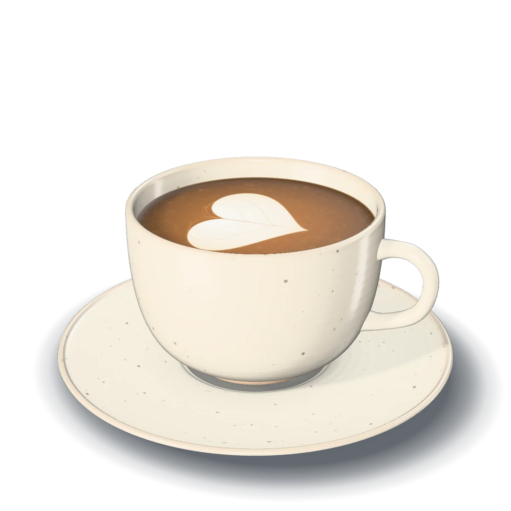

Site d'une cliente
Léana, maquilleuse à Paris
Ses réalisations en photos, ses tarifs et la prise de rendez-vous.
Visiter le site de LéanaVoici des exemples de sites vitrines, tels que nous les créons pour les auto-entrepreneurs, les freelances, les artisans et les petites entreprises. Certains sont en ligne et peuvent être visités ; les autres sont des démonstrations. Une démonstration présente un commerce imaginaire et porte toujours la mention « Démonstration ». Plus bas, une tasse en 3D illustre ce que peut devenir, sur votre site, un objet de votre métier.
Ces deux sites sont en ligne. Cliquez sur une image pour le visiter.
Ses réalisations en photos, ses tarifs et la prise de rendez-vous.
Visiter le site de Léana

Son parcours, ses réalisations et son CV à télécharger.
Visiter ce portfolioCes quatre commerces sont imaginaires. Nous avons réalisé leur site pour illustrer le résultat dans d'autres métiers. Ils ne sont pas en ligne : aucun lien n'est donc proposé.
Votre site sera construit à partir de vos réponses, pour votre métier. Vous le découvrirez d'abord dans une vidéo explicative gratuite, avant tout paiement.


Ses prestations, sa façon de travailler et un bouton pour envoyer des photos du livre à restaurer.


Un vitrail en grand dès l'arrivée, le métier présenté en une ligne et un bouton de demande de devis.


Ses couteaux de poche, leurs prix, son parcours et un bouton de demande de devis.


Ses cafés et leurs prix, sur un fond sombre, et un bouton pour se rendre à la boutique.
Sur votre site, un objet peut être tourné du bout du doigt, comme s'il était tenu en main. Cette tasse en est un exemple : elle pivote et sa couleur peut être modifiée.

Un pain, un vase, un couteau, un fauteuil : nous choisissons avec vous l'objet qui représente votre travail, puis nous le modélisons en 3D pour votre site.
Sa couleur, sa matière et sa lumière s'accordent au reste de votre site.
Vous fabriquez ou vous vendez une pièce que vous souhaitez présenter ?
Le verre et les objets très brillants ou très fins s'y prêtent mal : nous vous le signalerons en toute franchise.
Une vingtaine de minutes de questions sur votre activité. Nous préparons ensuite votre site et vous le présentons dans une vidéo explicative. Vous décidez après l'avoir vue.
Commencer gratuitementle temps d'un café